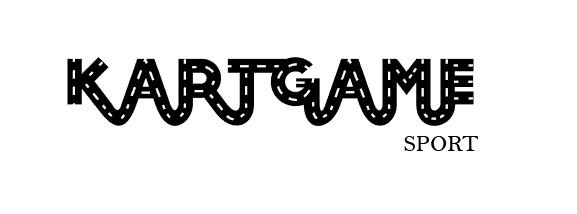

Het kartgamelogo was een opdracht voor vormgeving aan de Arteveldehogeshool in Gent (opleiding grafische en digitale media). Het was de bedoeling om een naam te verzinnen voor een sport en dan het logo typografisch aanpassen zodat je het verband kan zien tussen de gekozen naam en het onderwerp.
